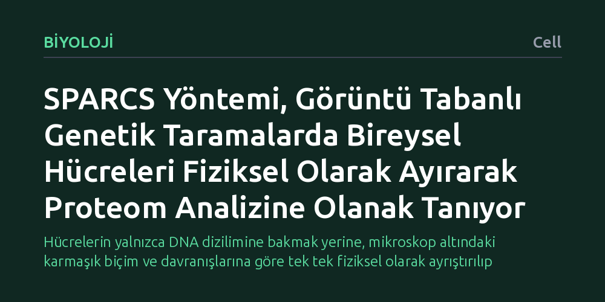

BIYOLOJI · Cell · 2026-10-21
Genetik taramalarda geniş hücre kütüphanelerini incelemek ile zengin mikroskobik görüntü özelliklerini ölçmek arasındaki açmazı aşmak hedeflendi. Geliştirilen SPARCS yöntemi, lazerle mikro kesimi otomatikleştirerek görüntüye dayalı karmaşık hücreleri fiziksel olarak ayıklamayı ve protein analizi yapmayı mümkün kıldı.
Hücrelerin yalnızca DNA dizilimine bakmak yerine, mikroskop altındaki karmaşık biçim ve davranışlarına göre tek tek fiziksel olarak ayrıştırılıp protein düzeyinde incelenebilmesini sağlıyor.

Genetik araştırmalarda temel amaçlardan biri, belirli bir hücresel özelliğin ya da hastalığın arkasındaki genetik mekanizmaları aydınlatmaktır. Bunun için araştırmacılar genellikle binlerce farklı mutasyon içeren geniş hücre kütüphaneleri oluşturur ve bu kütüphaneleri aynı anda tarar. Ancak bugüne kadar kullanılan yöntemlerde temel bir uzlaşmazlık bulunuyordu: Ya çok sayıda hücreyi hızlıca tarayıp sadece kabaca hayatta kalıp kalmadıklarına bakabiliyor ya da az sayıda hücrenin yüksek çözünürlüklü mikroskop görüntülerini inceleyip detaylı bilgi edinebiliyordunuz.
Mikroskop görüntüleri hücrenin şekli, organellerin dağılımı ve proteinlerin hücre içindeki hareketi gibi son derece zengin ipuçları taşır. Ne var ki geniş bir mutant havuzu içinden yalnızca bu karmaşık görsel özelliklere göre belirli hücreleri seçip ayırmak teknik olarak büyük bir engel oluşturuyordu. Hücrenin sadece DNA'sını okumak çoğu zaman yeterli olmuyor; o hücrenin fiziksel olarak elimizde olması ve hangi proteinleri ürettiğinin de incelenmesi gerekiyordu.
Araştırmacılar bu engeli aşmak için SPARCS adını verdikleri yeni bir platform geliştirdi. Bu yaklaşımın temelinde, biyoloji laboratuvarlarında uzun süredir bilinen ancak elle yapılması çok zaman alan lazer mikrodiseksiyonu tekniğinin otomatikleştirilmesi yer alıyor. Sistem, mikroskop altında taranan hücre kültüründe karmaşık görsel özellikler sergileyen hücreleri otomatik olarak saptıyor.
Ardından odaklanmış lazer darbeleri kullanılarak hedeflenen hücreler mikroskop lamından hassas bir biçimde kesilerek fiziksel olarak ayrılıyor. Makalede bu durumun temel gerekliliği şu şekilde özetleniyor: "Mevcut genetik taramalar, geniş mutant kütüphanelerine ölçeklenme ile bilgi açısından zengin fenotipleri ölçme arasında bir ödünleşimle karşı karşıyadır." Geliştirilen bu otomatikleştirilmiş altyapı, havuzlanmış taramalarda binlerce hücre arasından doğrudan görsel kriterlere uyan bireysel hücrelerin tek tek toplanmasını sağlıyor.
SPARCS yönteminin sunduğu en önemli kazanım, ilgilenilen hücrelerin yalnızca genetik diziliminin saptanmasıyla yetinilmemesidir. Hedef hücreler fiziksel olarak sağlam bir şekilde geri kazanıldığı için araştırmacılar bu hücreler üzerinde çok boyutlu moleküler analizler yürütebilmektedir.
Elde edilen hücre örnekleri kütle spektrometrisi tabanlı proteom analizine tabi tutularak hücrede hangi proteinlerin ne düzeyde üretildiği doğrudan ölçülebilmektedir. Böylece belirli bir mikroskobik görüntü anormalliği sergileyen hücrelerin yalnızca hangi genlerinin mutasyona uğradığı değil, hücre içindeki protein ağlarının bu duruma nasıl tepki verdiği de bütüncül bir şekilde ortaya konmaktadır.
Bu çalışma, karmaşık mikroskobik fenotipleri inceleyen araştırmacıların artık küçük örneklemlerle yetinmek zorunda kalmayacağını göstermektedir. Hücre morfolojisi, bölünme bozuklukları veya hücre içi protein çökelmeleri gibi görsel olarak tespit edilebilen karmaşık süreçler, artık geniş gen kütüphaneleriyle sistematik olarak taranabilir.
Ayrıca toplanan hücrelerin doğrudan protein profillerinin çıkarılabilmesi, genetik mutasyon ile hücresel sonuç arasındaki biyokimyasal köprüyü kurmayı kolaylaştıracaktır. Yöntemin yaygınlaşması özel mikroskopi donanımı gerektirse de, görsel hücre biyolojisi ile moleküler analizleri büyük ölçekte birleştiren pratik bir zemin sunmaktadır.